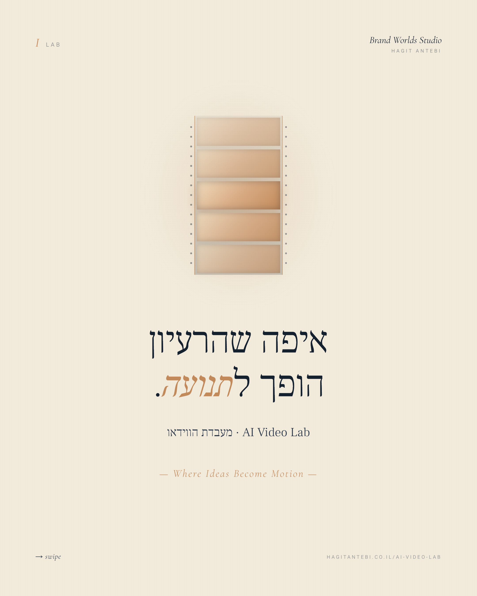
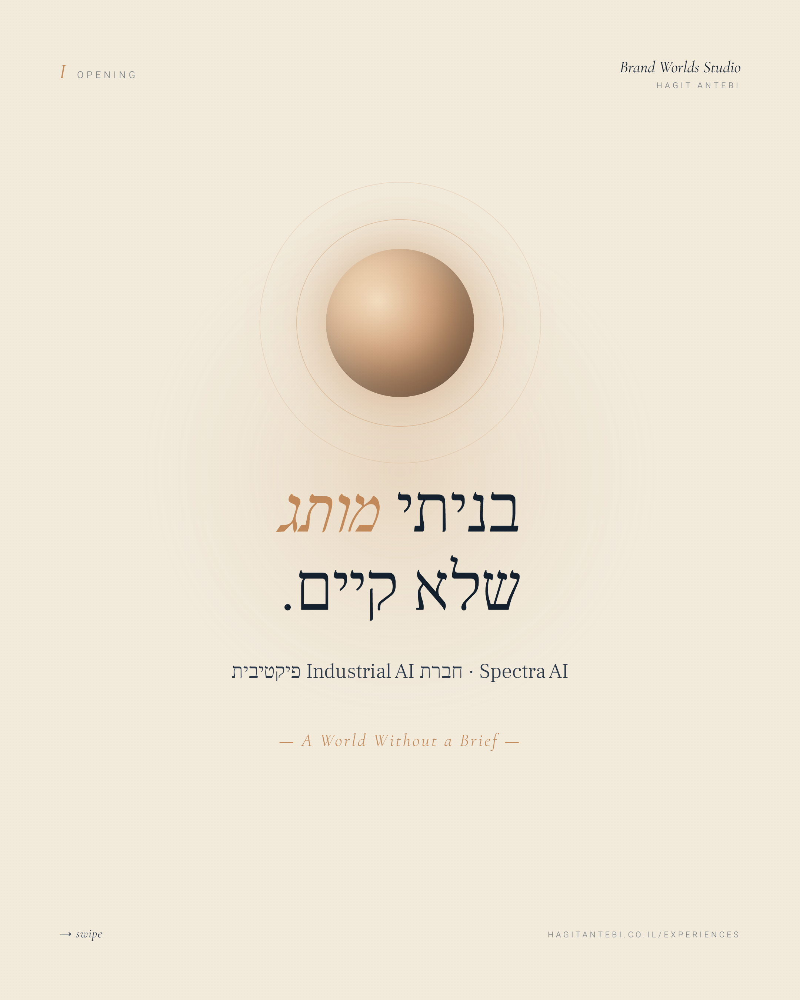

- סקילים 2.0 הם סקילים שמריצים סקריפט ומפיקים קובץ אמיתי — מצגת, מסמך Word, גיליון Excel או PDF.
- סקיל 1.0 היה זיכרון: לימד את ה-AI מי המותג. סקיל 2.0 הוא עובד: מייצר בשם המותג תוצר מוכן.
- העיקרון: AI מחליט, סקריפט מבצע — כך הקול והצורה יוצאים ממקום אחד, והתוצר נקי.
- פורמט
SKILL.mdהפך לתקן פתוח — הסקיל שלך הוא נכס נייד, לא נעילה לספק. - מתחילים מה-Brand DNA, מגדירים תוצר אחד חוזר, ומפרידים בין החלטה לביצוע.
שנה שלמה סקילים היו הוראות: מסמך שמלמד את ה-AI איך לחשוב על העסק שלך — הקול, הטון, הכללים. שכבת הזיכרון. חשוב, אבל פסיבי. ה-AI עדיין ייצר טקסט, ואת עדיין נשארת עם העבודה עצמה.
מה שהשתנה ב-2026 הוא שהסקיל הפסיק להיות רק זיכרון. עכשיו הוא יכול להריץ קוד ולהפיק קובץ מוגמר. לא לתאר לך איך תיראה מצגת — לייצר את ה-PPTX. לא להסביר איך לבנות טבלה — למסור XLSX. הסקיל הפך מיועץ שיושב לידך לעובד שמניח על השולחן תוצר.
סקיל 1.0 ידע מי המותג שלך. סקיל 2.0 מייצר בשמו קובץ שאפשר לשלוח ללקוח.
מה בדיוק מייצר סקיל 2.0
אנתרופיק שחררה סקילים מובנים שמפיקים את פורמטי הקבצים שכל עסק חי בתוכם:
- מצגות — קובץ PowerPoint אמיתי, לא תיאור של שקפים.
- מסמכי Word — הצעות, מסמכי אסטרטגיה, מכתבים עם עיצוב.
- גיליונות Excel — טבלאות, נוסחאות, ניקוי דאטה.
- קבצי PDF — יצירה ומילוי טפסים.
וזה עובד גם על סקילים שאת בונה בעצמך. סקיל הקרוסלות של הסטודיו הוא בדיוק זה: הוא לא מבקש מ-AI לצייר טקסט בעברית (ולקבל שגיאות כתיב מצוירות) — הוא מריץ HTML/CSS ומרנדר שקף 1080×1350 מדויק, אות אחר אות. הרעיון של סקיל 2.0 הוא בדיוק ההפרדה הזאת: AI מחליט, סקריפט מבצע, התוצר יוצא נקי.
ככה זה נראה בפועל — קבצים אמיתיים שהסקיל הפיק


לא הדמיה — אלה הקבצים עצמם. ה-AI החליט מה לומר, הסקריפט רינדר את השקף, ואף אות בעברית לא נשברה.
למה זה קריטי דווקא למותג
עד עכשיו הפער היה כאן: ה-AI ידע לכתוב בקול שלך, אבל הפורמט תמיד יצא גנרי. קיבלת טקסט נכון בתוך שקף שנראה כמו של כולם. סקיל 2.0 סוגר את הפער — כי אותו סקיל שמחזיק את ה-Brand DNA הוא גם זה שמפיק את הקובץ.
המשמעות: הקול והצורה יוצאים ממקום אחד. כשה-Brand DNA טעון כסקיל, המצגת נבנית בפלטה שלך, בטיפוגרפיה שלך, בשפה שלך — בלי שאף אחד יעצב אותה ידנית אחרי. זה ההבדל בין "AI שכותב לי תוכן" לבין מערכת שמפיקה נכס ממותג מוכן.
הקול והצורה יוצאים ממקום אחד — והתוצר יוצא ממותג מלכתחילה, לא מעוצב בדיעבד.
איך מתחילים — בלי להיות מתכנתת
הבסיס פשוט יותר ממה שנשמע. סקיל הוא תיקייה עם קובץ אחד — SKILL.md — שמתאר ל-AI מתי להשתמש בו ומה לעשות. סקיל 2.0 פשוט מוסיף לתיקייה סקריפט שמייצר את הקובץ.
מתחילים מה-Brand DNA
זה הסקיל הראשון — שכבת ההחלטות שכל תוצר נשען עליה. בלי מותג מוגדר, סקיל 2.0 ייצר לך קבצים מהר — אבל הם ייראו כמו של כולם. המדריך המלא להפיכת Brand DNA לסקיל →
מגדירים תוצר אחד
קרוסלה, מצגת, מסמך הצעה — משהו שאת מייצרת שוב ושוב. סקיל 2.0 מצטיין בתוצר חוזר עם פורמט קבוע: שם ההשקעה בסקריפט מחזירה את עצמה בכל הפקה.
מפרידים תפקידים
תני ל-AI את ההחלטות (מה לכתוב, איך למסגר) ולסקריפט את הביצוע (הרינדור, הפורמט). ההפרדה הזאת היא בדיוק מה שמוציא תוצר נקי — והיא אותו עיקרון שעומד מאחורי שכבת ההחלטה בסרטוני AI.
ועוד דבר אחד ששווה לדעת: התקן של הקובץ — SKILL.md — הפך לתקן פתוח. אותו סקיל עובד לא רק בקלוד, אלא גם בכלים אחרים שתומכים בו. כלומר סקיל שאת בונה היום הוא נכס נייד בבעלותך, לא נעילה לספק אחד.
שאלות נפוצות
מה ההבדל בין סקיל רגיל לסקיל 2.0?
סקיל רגיל מלמד את ה-AI איך לחשוב על העסק שלך — הקול, הטון, הכללים — והתוצר נשאר טקסט. סקיל 2.0 מוסיף סקריפט שמריץ קוד ומפיק קובץ מוגמר: מצגת PPTX, מסמך Word, גיליון Excel או PDF. במילים אחרות, סקיל 2.0 לא רק יודע מי המותג — הוא מייצר בשמו תוצר מוכן.
צריך לדעת לתכנת כדי לבנות סקיל שמייצר קבצים?
לא כדי להשתמש בסקילים המובנים, ולא בהכרח כדי לבנות סקיל בסיסי. סקיל הוא תיקייה עם קובץ SKILL.md שמתאר בעברית פשוטה מתי ומה לעשות. הרכיב הטכני הוא סקריפט הרינדור — ואפשר לבנות אותו בעזרת קלוד עצמו. מי שרוצה להריץ בלי טרמינל בכלל, יכול דרך Claude Cowork.
סקיל שאני בונה בקלוד עובד גם בכלים אחרים?
כן. פורמט SKILL.md הפך לתקן פתוח, ואותו קובץ סקיל עובד בסביבות שונות שתומכות בו — כך שהסקיל הוא נכס נייד ולא נעילה לספק אחד.
איך זה מתחבר ל-Brand DNA?
ה-Brand DNA הוא הסקיל הראשון והבסיסי — שכבת ההחלטות שמגדירה מי המותג. סקיל 2.0 בונה על זה: אותו סקיל שמחזיק את ה-DNA הוא גם זה שמפיק את הקובץ, כך שהקול והצורה יוצאים ממקום אחד והתוצר יוצא ממותג מלכתחילה.
כל מה שבמאמר הזה רץ בסטודיו כל יום. סקיל הקרוסלות מפיק את הקרוסלות שאתם רואים באינסטגרם של הסטודיו, ועולמות המותג החיים — AURELLE°, SOUFFLÉ° ואחרים — נבנו באותה הפרדה בדיוק: ה-DNA מחליט, הקוד מבצע.
המאמר הזה הוא חלק ממדריך רחב יותר — מה התחדש בקלוד ב-2026, לבעל עסק — לצד המאמר על Claude Cowork, הדרך להריץ את כל זה בלי טרמינל.
הסקיל הראשון שלך מתחיל ב-DNA
לפני שסקיל מייצר קובץ, הוא צריך לדעת מי המותג. אני בונה את שכבת ההחלטות הזאת — ה-Brand DNA — ומתרגמת אותה למערכת שמפיקה תוכן ממותג בקול אחד.
לאבחון פער המותג ←